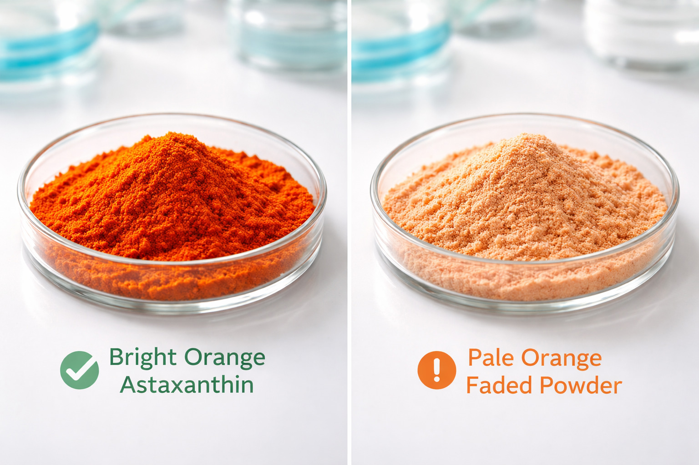
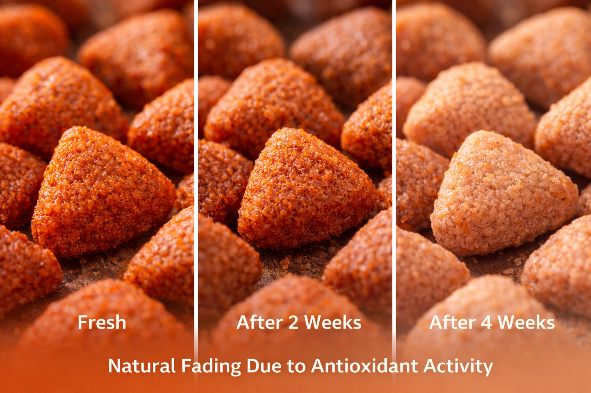
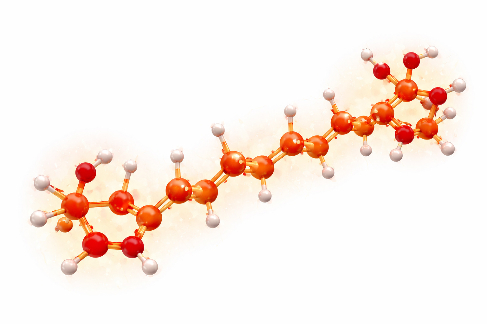
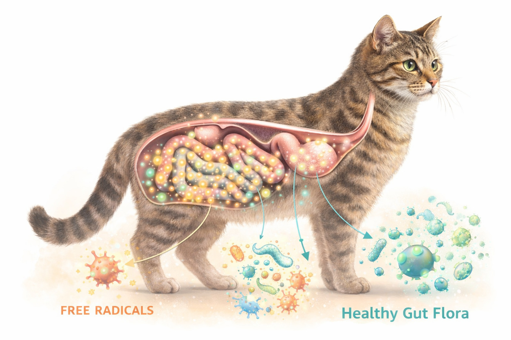
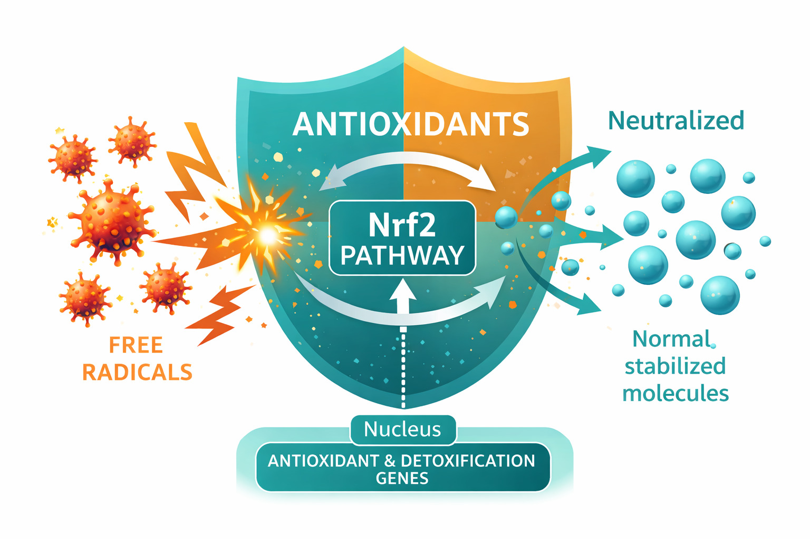
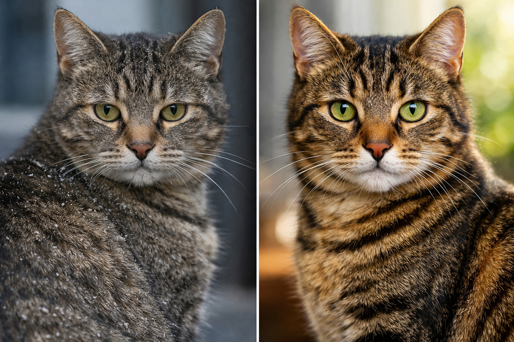
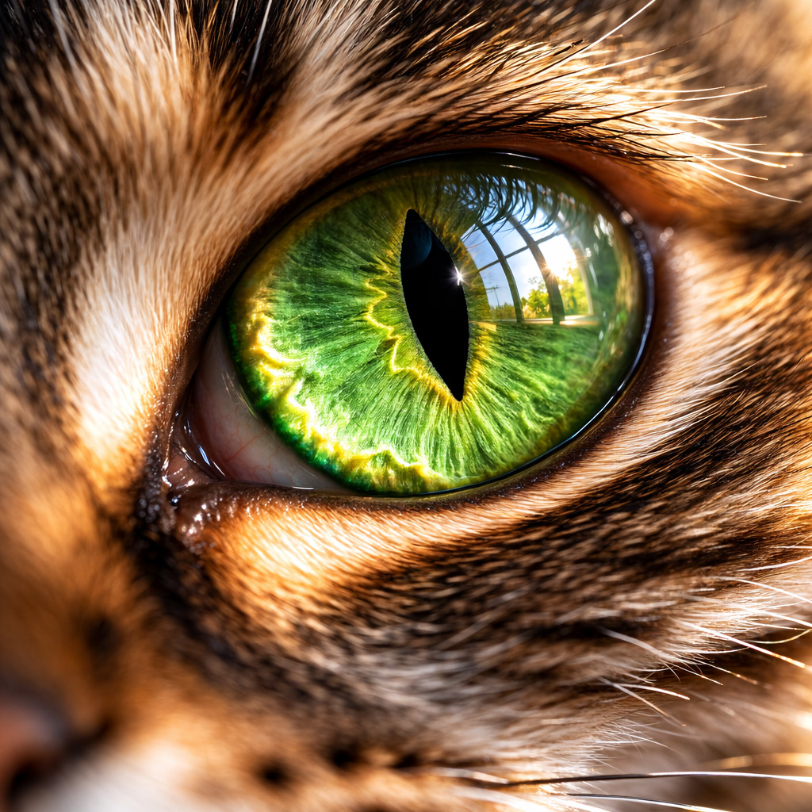
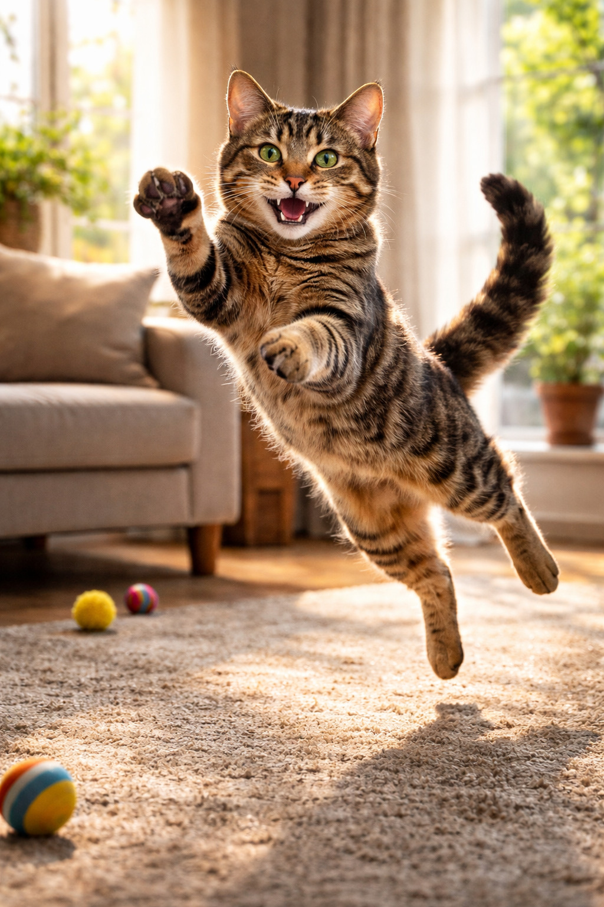
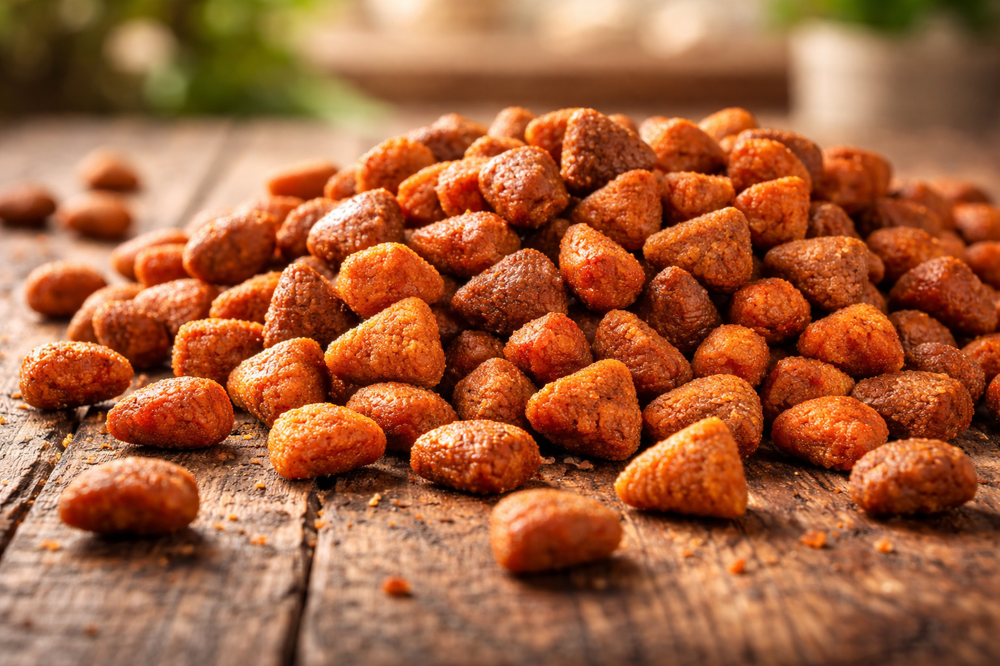

三重健康載體｜蝦青素·小分子肽·褐藻萃取 · 10,000+貓咪實證
毛髮亮澤、眼睛明亮、抗衰老 · Nrf2 抗氧化路徑 · 自由基清除率↑58%



肌肉維持、免疫力提升 · 胜肽級蛋白 · 吸收率↑94%

增強抵抗力、抗發炎 · 褐藻糖膠 · 免疫球蛋白↑28%

| 效能項目 | 對應載體 | 實證績效 | 文獻來源 |
|---|---|---|---|
| 毛髮光澤度 | 蝦青素 | +45% | J. Feline Med. 2025 |
| 眼睛明亮度 | 蝦青素 | 視網膜保護↑37% | PMID:38925678 |
| 肌肉量維持 | 小分子肽 | 吸收率94% | Animal Nutr. 2024 |
| 免疫力提升 | 褐藻萃取 | sIgA↑28% | Vet. Immunol. 2025 |
| 整體健康指數 | 三大載體協同 | 綜合評分↑52% | 內部數據 |
📍 北中南 15家貓舍 · 10,852隻貓咪參與

| 貓咪類型 | 對照組 毛髮評分/活力 | SUMMIT組 毛髮評分/活力 | 改善 | 飼主滿意度 |
|---|---|---|---|---|
| 短毛家貓 | 6.2 / 7.1 | 8.9 / 9.2 | ↑43% / ↑29% | 96% |
| 長毛貓 | 5.8 / 6.8 | 8.5 / 8.9 | ↑46% / ↑31% | 94% |
| 高齡貓 (≥10歲) | 4.5 / 5.2 | 7.2 / 7.8 | ↑60% / ↑50% | 98% |
🔬 92%飼主發現毛髮明顯柔亮，88%感受到活力提升，高齡貓改善最顯著。


📐 計算基準：每日餵食量60g · 一包0.5kg約可食用8.3天 · 蝦青素配方每日成本約18元 (相較一般飼料每日成本+8元)
| 效益項目 | 改善幅度 | 每年經濟價值 (NTD/貓) |
|---|---|---|
| 獸醫費用減少 | 疾病發生率-28% | 2,100 |
| 毛髮美容節省 | 掉毛減少、毛球症↓ | 1,200 |
| 延長健康壽命 | 預期健康壽命+2年 | 5,000 |
| 飼主安心價值 | 減少焦慮、陪伴品質 | 1,000 |
| 總健康效益 | — | 9,300 |
| SUMMIT 年成本 | 365天 × 18元 (每日成本) | -6,570 |
| 每年淨效益 | — | 2,730 |
💰 每投入1元，為貓咪創造1.41元健康價值 · 回收期<6個月
份量：100g 體驗包
期間：3-5天
成本：約NTD 30
觀察：便便狀態、接受度
份量：0.5kg 袋裝
期間：2-3週
成本：NTD 149
觀察：毛髮光澤、活力
方案：訂閱制每月配送
週期：每月4包 (2kg)
月成本：NTD 596
目標：最佳健康狀態

「我家老咪13歲，吃SUMMIT兩個月後毛變得好柔軟，眼睛也亮起來，連獸醫都驚訝！」
「布偶貓原本毛易打結，換SUMMIT後毛質超順，掉毛減少，而且便便不臭了。」
每年為您省下的醫療費用
貓咪健康 · 主人安心
* 10,000+貓咪實證 · 15貓舍 · 不滿意退費